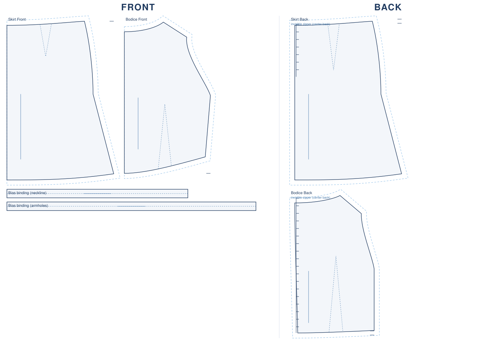
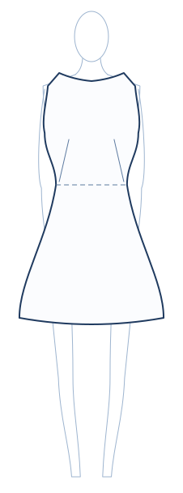
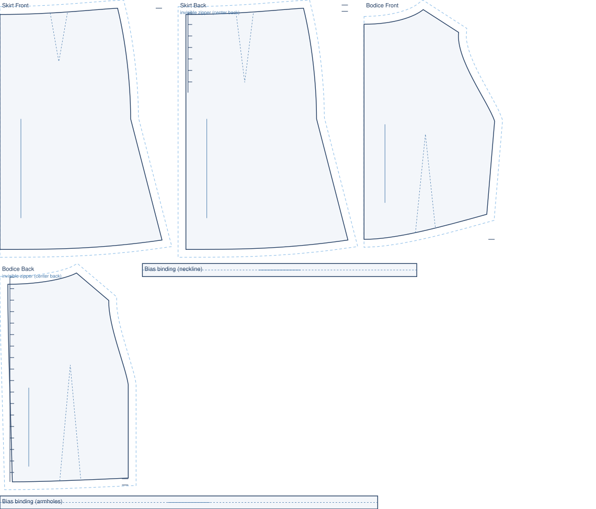

stitchu / Collections / The Sixties Seventies Collection / Boat-neck sleeveless shift mini
1960s · André Courrèges style
A clean sleeveless A-line shift mini with a wide boat neckline, finished with a plain bias-bound neck (no collar; the classic 60s space-age line is collarless). A boxy shift is drafted with simple darts, not princess panels.
Technical Flat

The front and back flat sketch, the way a commercial pattern shows the garment. Drawn from the engine's own pieces with grainline, balance notches and the closure mark.
On the Figure

The same look drawn on a standard fashion figure, so you can see how it would sit when worn: where the neckline falls, how the hem length reads on the body, how the silhouette drapes. An illustration from the same spec, never a photo.

The engine's own drafted pieces for this look, laid out for cutting. Drawn to an EU38 demo body.
| pattern pieces | fabric estimate |
|---|---|
| Roughly 1.4 m at 140 cm wide. 5 pieces · fabric scales to your measurements |
This look drafts complete as a silhouette. The engine does not draw these surface details, so they are noted here, not silently dropped: oval welt pockets, self-fabric belt (not drafted).
Every sheet carries a 3 cm calibration square. Measure it after printing at 100 percent scale, no fit-to-page, so the pattern comes out true to size.